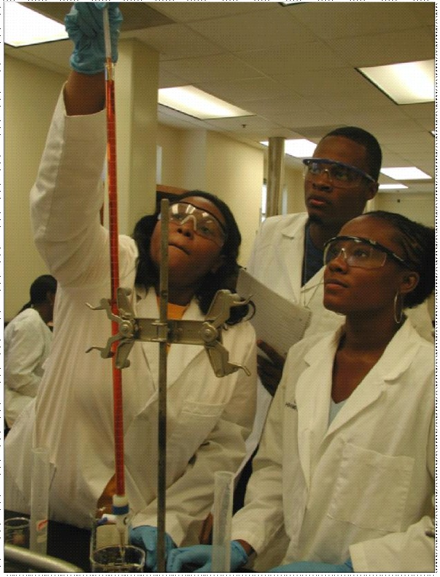

Department of Criminal Justice & Forensic Science
Department of Math & Computer Science
The College of Sciences and Health Professions’ mission is to produce graduates who are critical thinkers, problem solvers, communicators, and contributors to the wellbeing of the community though competence in their areas of study. The College contains majors in the Departments of Criminal Justice and Forensic Science, Mathematics and Computer Science, Natural Sciences, and Nursing. The degrees and minors are listed on the table of contents above. The Department of Natural Sciences provides an avenue for students who are interested in Pre-engineering and many medical fields including Pre-Medicine, Pre-Pharmacy, Pre-Dentistry, and Pre-Veterinary Medicine. The Natural Sciences Department, in collaboration with the College of Education, offers a Science Education curriculum at the Baccalaureate and Masters’ degree level. Additionally, Master degrees are offered and in Criminal Justice, Mathematics Education, as well as in Nursing, with a focus on Family Nurse Practitioner and Nurse Educator (see the Graduate Catalog).
The College office is housed in the Academic (ACAD) Building in room 130. The departments of the College are housed in various locations across the campus: Criminal Justice and Forensic Science is in Hartnett Hall; Mathematics and Computer Sciences is in Simmons Hall; Natural Sciences and Nursing are located in the (ACAD) building.
Experiential and Lifelong Learning
The College and departments strongly support experiential learning and lifelong learning. Practicum experiences and Internships are incorporated into the program of study or encouraged during the summer break. Articulations with Associate Degree granting institutions have been established to facilitate progression to Baccalaureate degree completion programs with minimal difficulty. Students are provided a basis for and are encouraged to pursue Masters degree education and beyond and to continue professional development.
